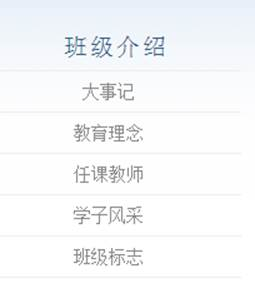

内容： acm class网页的主要内容都过于陈旧，其中最新的新闻也只到2013年上半年。不与姚班主页比，就与致远官网比的话，许多致远官网的内容完全可以直接放到acm class主页上来，所以这里的问题是网页的更新过慢与网页的内容太少。 其次，acm class的内容过于集中于acm队所取得的成就，而忽略了班级同学所取得的成就。
分类： 分类不明。这可能是由于内容太少的原因。就这里的新闻来说，一些新闻是针对acm class的同学的，而有一些是针对想要报考acm clas的高中同学，你很难从纷乱的新闻条目中找出你所想要的内容。
网页布局、设计： acm 班级主页上不仅没有班级同学老师的照片，连具有acm特色的图片都没有，班级介绍过于简略。acm class已经走过了10多年，可从网页设计上看没有这种沧桑感。首页只有一面，可以考虑将各个子目录在首页上显示并列举一些子目录下面的内容。
网页功能： acm class网页的功能过少，本来内容就少，现在给人的感觉就是除了程设、数据结构等课程的安排、介绍、内容下载外，没有任何其他作用。
我的建议：
一个好的网页纯粹构框架是不可能弄好的，好的网页必须依靠好的内容，因此我觉得一个必要的环节是收集或者说寻找必要的充足的材料来填充。例如，同学、老师的介绍（可以附图），班级历史的介绍，定期收集人物感想等等。招生信息有待完善。
改进分类，如果要改进的话，我的建议是扩充首页内容，将各个版面的内容贴一部分进入首页，同时根据内容的不同，修改分类或者扩充分类。增加各个年级的专题。
首页的设计一定要炫酷，不一定要非常炫酷，但不能像原来那样过于单调（颜色、样式），我们可以增加一些图片和静态、动态图，同时滚动播放最新新闻。适当增加一些特效。
扩充功能。首先，我想到的是可以在acm class主页上添加一栏“学长去哪了”学长学弟互助论坛，可以的话可以给每个人一个账号，有问题可以匿名也可以实名，有必要的话可以建立积分制度。其次，（虽然我不会）我觉得或许可以开发一个acm class的客户端，能将一些信息及时传送到手机上，并完善手机界面。再者，希望能移植google group的一些功能进入班级主页。
页面布置：应该说，这个网站是我们最常使用的网站之一，但从页面布置来说，这个网站过于简陋，界面不够清爽。颜色过于单调，内容布局太过呆板。我们需要用到许多功能，但功能界面又窄又长，而且有些按钮还按不到，如果不是考试等信息发布的主要平台，访问量一定非常少。
分类：页面左侧的分类过于多，分类不太明确，而且许多类可以归在一起成为一个大类。
内容：我们发现大部分信息实际上并不是我们所需要的，因此可以对用户人群进行分类，大一、大二等，分别发布相应信息。
功能：教学信息服务网上的功能还是仅限在了信息发布层面，可以增加一些别的功能。
我的建议：
同样是页面问题，画面效果可以做得更好一些，例如增加一些图片，分类按钮增加一些动画效果
用户登进去后的界面可以进一步完善，例如将分类水平布置（这是大部分人所喜欢的），增加大类，减少类别分支树，增加索引树的层数
针对不同受众，发布不同信息。
可以增加一些用户信息上传功能，例如可以在教学信息服务网上办理缓考、减训等申请，也可以上传一些个人信息，增加各个sjtu网站账号间的联系
内容：感觉学校官网的内容导向性不足，应该有一项比较明显的专栏用于招生或学校整体介绍。官网上的联系方式不够明确，只有一个号码。
分类：分类不够明确，许多类别模棱两可，给用户访问造成极大不便。
页面布局：应该说交大的官网页面布局是蛮不错的。
我的建议：
这几天我比较认真地看了一下，觉得网页中很多主题其实是挺不错的，但是内容本身比较老旧，而且布局上有不太合理的地方，一些比较让人关心的信息并没有突出，同时一些链接是无效的。我认为可以先把内容做一些改进，然后再以此为基础将界面设计得好看一些。在内容的改进上，我觉得很多方面可以参考致远学院的官网，那个网站虽然页面比较朴素，但内容是比较合理的。
新闻链接放在首页没什么必要，因为一般来说不会经常出现新闻，把首页用来展示一些ACM班比较具有特色. 能够吸引眼球的东西更有意义。我的建议是首页可以把大部分版面用来进行对班级的介绍，中间可以配一些图显得好看一些。
首页上每个超链接里附属的链接可以直接通过下拉菜单显示（参见致远学院网站），这样比较清晰。
关于首页上的标志，我看到班级介绍中有关于它的内容，我认为可以直接通过首页上那个标志进行超链接或者用其他方式关联起来，毕竟这个标志挺有特色的。
班级介绍里关于师资和学生名册的内容我觉得都可以直接通过首页进行超链接，因为这两部分内容还是很多人比较关心的。其中对师资的介绍部分我觉得可以参考致远学院的网站。
招生部分是很多家长和学生比较关心的，我觉得这部分内容可以完善一下，比如加一些联系信息. 具体的招生方案什么的。
课程中心可以加一些对课程的简要介绍，同时可以增加对学子讲坛的介绍。
在线题库可以通过首页链接。
我觉得学子讲坛的评分功能可以实现一下。可以是列一个表，每个学生把各项评分（选题. 演讲方式. 时间控制等等）输入后直接统计总分，也可以让评分系统拥有一些基本的分析数据的功能。
我们所需要的网站：
我认为对于acm班的网站，我们所需要的网站是主要满足以下三点：宣传性，功能性和继承性。
所谓对外宣传性，是指要做到高大上的ACM班宣传。其基础是让外面的人能了解班级的大概情况，他们可以通过浏览这个网站，了解到ACM班。不仅仅让未来的学弟学妹有为了去在这个班里读书的憧憬，而且是我们能够将自我展现出来，让我们自身对自身有更深刻了解的平台。
现在ACM班官网上有6块栏目。除课程中心并不是以宣传性外，其余的栏目可以进行大致分类。
第一类是首页，班级介绍和招生信息。这些信息有些是难以修改的。同样，我们需要进行一次包装。
第二类是科研成果，课余生活已经ACM竞赛三条。不难发现这里面的信息都需要更新。大多数记录都停留在2012年，这里有继承性的断层问题，等下将谈到。如果难以更新，找到一种合适的包装方式也是需要思考的。 比如ACM竞赛里有一项赛场照片。直接贴图效果并不佳，但是如果能去做成有回忆效果的，类似“相册”的包装效果想必比现在要好很多。
同样，我们需要将一些本来隐藏在主页目录下的子目录的资源，提到主目录下。例如班级介绍那一栏有以下的子目录：
→→→→→
我们应该把这些子目录坐成一个“活页”，比如这样：
当然，应该再动态一点，最好不需要点击。
再观整体，ACM班的网页整体过于静态，颜色基调是不错的，但是动态感给以的死气沉沉的感受已经不符合当下了吧。让首页动起来是很重要的。
再强调一个观点，我认为首页的重要性远比其它页面要重要。首页不仅仅是封面，给人的直接印象。更重要的是它会相对的确定整个设计的模板和各个页面的雏形。这里我在思考一个创新，能否让图片展示的移动不是水平向的，而是其它的一些creative的方式呢？这只是一个idea而已，还没有细想。（吐槽：仔细观察首页会发现如果图片变化的话，右边ACM班的班级标志也会有少许移动，移动值和图片长度有关…）
功能性第一点是学子风采栏的建设。将它提到主目录之后，学子风采栏可否使用给一张班级合影，然后点击每一个人的头像，可以跳到他的介绍部分去的方式呢？
然后是“课程中心”这一栏目。这里需要进行一些整理了。表现在各个不断时间，相同课程的网页，地址居然没有关联。例如PPCA2013和PPCA2014：


整个页面也应该显示并强调出各个课程之间的联系。在这次的重新设计中，可否统一课程和主页的样式呢？
网页做出来应该更方便以后的内容添加和修改。我们在修改的时候要规范好格式。以上的几个吐槽基本都是格式不够规范导致的。 我们也需要对我们所做的网页有一个大概的时间估计。意思是在近几年内网页不会显得Out。 继承性应该是制作网页的时候需要注意的，和网页的大致设计思路关系并不大。
当前版本的OJ已经实现了基本功能，以下是我认为有添加性的几个功能：
最后是对OJ的吐槽： OJ的风格和ACM_CLASS的风格并不相同，也不是太接近。是否要做一些美化呢？
风格统一化
目前ACM班主页主要由三个部分组成，主页部分，课程中心部分，OJ部分，三者的网页风格可以说几乎是完全不同的，在此给出的第一条外观建议是风格的统一化。 当然，看风格的话，后两个部分似乎都应用了现成的模板，所以不知道完全自建的难度多大，也不清楚是否有现成的模板更改- -
主页精简化
个人认为主页能够完整的在一屏内展示完毕，并拥有大部分大方向的链接是比较好的。更多的内容往下拉可以接着出现，但是在下拉之前应该形成完整的一个欢迎页面。
主页的学习对象： 姚班主页(上半部分)
关于框架
个人认为，我们的主页还是长得可以的，框架看起来还是挺干净整洁的，即使要换风格的话也希望能保持这一整洁，内容不在花哨，风格即使要变也应该向更为整洁的扁平化风格进化。并且，千万不要学习目前交大的新版图书馆官网，不自然的加入扁平化风格，真的很怪异……
对了，似乎我们主页的层次感不强，就是主标题副标题和正文的字体和大小应该差异明显一点恩。恩，字体也可以换一个。。。
手机端的适配
感觉真心没什么用- -没人会用手机上ACM官网的- -
强烈建议新增账户系统，课程中心的这一部分不宜对外发布，你们助教写手机还用大写你们不蛋疼么- - 对于非登录用户，ACM班的介绍，包括课程，历史，荣誉，也就是现在所有的一切就足够了，对于登录用户，我对动态内容包括部分准静态内容新增的建议，这些建议的前提都是内外分离，否则，完全公开的平台并不适合。
更频繁的内容更新
这一点上需要更方便的底层交互，看现在网站这样子可能，所有内容都是纯静态的吧。。强烈怀疑- -
全新的活动中心
更多的多媒体，ACM班的整个主页只有四张图片，还是和ACM本身毫无关系的- -强烈要求在所有的版面上添加图片，再新增照片这一板块- -还是有很多照片可以传的呢。 增加照片这里，参考: 苹果官网
新增荣誉榜
在这里没想通为什么两年前的ACM十年还留在这里。
而且和ACM主页的唯一链接还隐藏的很深，应该合并这两个主页（而且貌似这个还是有账号系统的- -），并加强这一方面的介绍，包括学生发了什么paper啊，拿了什么offer啊，招生什么的就是靠这个好不好。
全新的学术中心
建议新增学长学姐的各类paper，开放给所有ACM班同学，增进学术互动，这比一年一次学术节有用多了。
和致远学院的联动
恩，我没想通，整个ACM网页上没有任何提及致远学院的地方，不知道是故意为之呢，还是因为特么加入致远以后三年都从来没更新过！！？
全新的课程中心
在对外系统中，将完全的ACM班课程规划予以显示。 在对内系统中，最好所有的课程都有课程主页，至少有个发课件的地方吧，也能有个发作业的地方吧，也罗列一下课程安排吧。可以的话也可以建个论坛不过个人认为应该没多大用。 课程平台中也应该具有更多的内容，包括学子讲坛的随机顺序生成器啊，评分系统啊等等。
全新的OJ系统
个人认为OJ基本的已经挺不错的，服务器的问题很大，很多地方逻辑有点问题，比如看不到很久之前的提交啊，看不了自己提交的具体问题啊什么的。 但依旧有很多功能缺失，包括题解啊，难度啊，讨论啊，看代码也不方便啊，巴拉巴拉，以上，建议参考wikioi 个人认为这个网站很不错呢~不知道是谁搞的，感觉如果能和他们合作的话，以后所有高校的OJ都合并的话会很有意思，咱们要不要推动一下我国OJ系统的发展呢~ 对了，强烈建议分离考试系统和作业系统- -wjj他们太丧心病狂了- -
以上是对ACM班级主页的美好展望，但我依旧对我们有能力完成以上的一切持悲观态度，即便是外观变化也不是那么的简单，我们可能有能力写出更美观的主页，但无法将整个框架其变得更加美观，重写整个CSS风格几乎是不可能的，可能去找找现成的素材比较靠谱吧。 其次对于内容的更改，一个账号系统，以及课程中心，再然后是图片的加入，这三点是最急需的，其次的就其次了。。。 好吧，我写这个东西的是时候我还以为TBY要我的- -他现在不要我了TAT，黄锃sama一定要要我啊啊啊啊！！！！！！！！！！！！
新版ACM班网页地图：